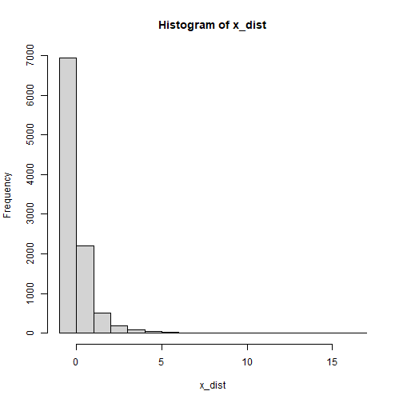
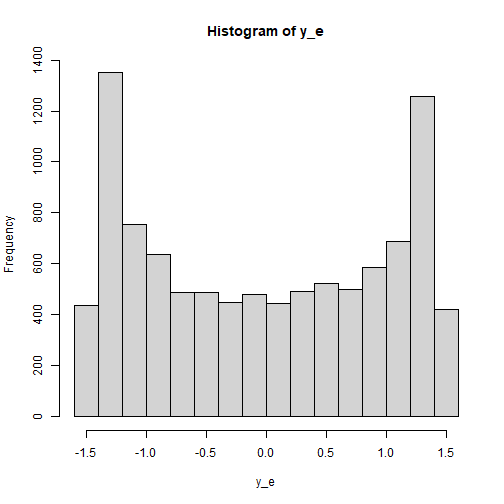

Sample Size Determination with Nonnormal Variables: Path Models of Observed Variables
2026-03-16
Source:vignettes/articles/n_from_power_mediation_mlr_obs_simple.Rmd
n_from_power_mediation_mlr_obs_simple.RmdIntroduction
This article illustrates how to do power analysis and sample size
determination in some typical observed variable path models, with the
variables hypothesized to be nonnormally distributed and the model to be
estimated using robust methods such as MLR in lavaan. The
package power4mome
will be used for illustration.
Prerequisite
Basic knowledge about fitting models by lavaan and
power4mome is required.
This file is not intended to be an introduction on how to use
functions in power4mome. For details on how to use
power4test(), refer to the Get-Started
article. Please also refer to the help page of
n_region_from_power(), and the article
on n_from_power(), which is called twice by
n_region_from_power() to find the regions described
below.
Scope
A simple mediation model of observed variables will be used as an example. Users new to the package are recommended to read the article on the steps for a path model with observed variables having a multivariate normal distribution (the default).
Set Up the Model and Test
Load the packages first:
Estimate the power for a sample size.
The code for the model:
model <-
"
m ~ x
y ~ m + x
"
model_es <-
"
m ~ x: m
y ~ m: m
y ~ x: s
"
The Model
Refer to this article on how to
set number_of_indicators and reliability when
calling power4test().
Specify the Distributions
Suppose that we expect the predictor (x) has a uniform
distribution because cases were sample more or less evenly across a
range of values of x. Moreover, the outcome variable
(y) is a measure of a mental health problem and so its
error term is positively skewed.1
Without real data, it is difficult to know the actual distribution. Nevertheless, we can select a distribution that reasonably approximate the expected distribution of a variable or an error term.
Built-In Functions For Random Numbers
The package power4mome comes with
some ready-to-use function for generating random error. A full list of
them can be found here. To be used
in power4test(), these functions need to have the
distribution standardized such that the population mean and standard
deviation are 0 and 1, respectively. All the build-in functions already
have the distributions standardized.
For example, the function rexp_rs() can be used to
approximate a heavily positively skewed distribution. The function used
is stats::rexp() from base R, but, by default, the
distribution is transformed such that the population mean and standard
deviation are 0 and 1, respectively.
An Example
Suppose we would like to estimate the power to test the indirect
effect using Monte Carlo confidence interval. We expect that one or more
observed variable or error term is not normally distributed. For the
sake of illustration, the following distributions hypothesized for the
x and the error term of y.
The Distribution of x
Let’s assume that the distribution of x is a severely
positively skewed distribution. This can be simulated by the function
rlnorm_rs(). This is an illustration of the
distribution:

plot of chunk x_dist_obs
The Distribution of the Error Term of y
Last, let’s assume that the distribution of the error terms of
y is bounded and is bimodal. We we rbeta_rs()
to simulate this distribution, setting the parameters
shape1 and shape2 to create the bimodal
distribution:

plot of chunk y_e_obs
Set the Distributions by x_fun
This section illustrates how to set up the call to
power4test(), with observed variables or error terms
generated using the distributions described above. We would like to
check the model first. Therefore, the test of indirect effect is not
added for now.
out <- power4test(
nrep = 600,
model = model,
pop_es = model_es,
n = 100,
x_fun = list(x = list(rlnorm_rs),
y = list(rbeta_rs, shape1 = .5, shape2 = .5)),
iseed = 1234,
parallel = TRUE)How to Use x_fun
The argument x_fun is used to specify the function used
to generate the observed variables. If an observed variable is a “pure”
predictor (it is not predicted by any other variables in the model),
then this is the function to generate its values. If it is an endogenous
variable (it is predicted by at least one other variable in the model),
then this is the function to generate its error term.
The value must be a named list, with the name being one of variables
(x, m, and y in this
example).
Each element must itself a list, with the first argument is the function to be used.
- For example,
x = list(rlnorm_rs)indicates that the functionrlnorm_rswill be used to generatex.
If there are additional arguments to be passed to this function, include them as named arguments in the list.
- For example, if an element is
y = list(rbeta_rs, shape1 = .5, shape2 = .5), thenrbeta_rswill be used to generateyor its error term, and the argumentsshape1andshape2will both be set .5.
If a variable is not included in the lists for x_fun,
the default distribution used is a normal distribution.
Functions That x_fun and e_fun Can
Use
In principle, any function can be used to generate the numbers, as long as it meets these requirements:
It has an argument named
n, the number of random numbers to be generated.It returns a numeric vector.
Though no error will be returned, to ensure that the population
standardized coefficients are of the specified values, the functions for
x_fun and e_fun should generate numbers from a
population with mean and standard deviation equal to 0 and 1,
respectively.
Check The Generated Data
To print the details of the generated data, including the descriptive
statistics, use print with
data_long = TRUE:
print(out,
data_long = TRUE)This is part of the output:
#> ==== Descriptive Statistics ====
#>
#> vars n mean sd skew kurtosis se
#> m 1 60000 0.00 1.00 0.16 0.50 0
#> y 2 60000 0.00 1.06 0.04 -1.13 0
#> x 3 60000 0.01 1.00 5.24 53.74 0The descriptive statistics shows that the distributions are not
normal. As expected, those of x is positively skewed, while
those of y are nearly symmetric but light tailed (negative
excess kurtosis).
Note that the distribution of an endogenous variable depends on both
its predictors and and its error term. Therefore, even though the error
term of m is normally distributed, m is still
not normally distributed because x is positively
skewed.
Fit the Model by MLR (Robust Maximum Likelihood)
Because of the nonnormal distribution, we would like to estimate the
power when a robust estimation method is used. One common method used in
lavaan is MLR. Although this method and the default,
maximum likelihood (ML), yield the same point estimates, their standard
errors are different. Therefore, the results from Monte Carlo confidence
intervals are also different.
The argument fit_model_args can be use to pass
arguments, as a named list, to the fit function, which is
lavaan::sem() by default.
To use MLR in lavaan::sem(), we use
estimator = "MLR". Therefore, we add the argument
fit_model_args = list(estimator = "MLR") in the call to
power4test():
out <- power4test(
nrep = 600,
model = model,
pop_es = model_es,
n = 100,
x_fun = list(x = list(rlnorm_rs),
y = list(rbeta_rs, shape1 = .5, shape2 = .5)),
fit_model_args = list(estimator = "MLR"),
iseed = 1234,
parallel = TRUE)We can verify that MLR is used by printing the results:
print(out)This is part of the output:
#> ============ <fit> ============
#>
#> lavaan 0.6-21 ended normally after 1 iteration
#>
#> Estimator ML
#> Optimization method NLMINB
#> Number of model parameters 5
#>
#> Number of observations 100
#>
#> Model Test User Model:
#> Standard Scaled
#> Test Statistic 0.000 0.000
#> Degrees of freedom 0 0As shown in the printout, MLR was used and so there is a column
Scaled in the printout of lavaan.
Add the Test and Estimate Power
We now can add the test and estimate power. See this article
for details on the test function test_indirect_effect() and
how to set the argument test_fun and
test_args. R_for_bz(200) is used to set
R to the largest value less than 200 that is supported by
the method proposed by Boos & Zhang
(2000). 2
out <- power4test(
nrep = 600,
model = model,
pop_es = model_es,
n = 100,
x_fun = list(x = list(rlnorm_rs),
y = list(rbeta_rs, shape1 = .5, shape2 = .5)),
fit_model_args = list(estimator = "MLR"),
R = R_for_bz(200),
ci_type = "mc",
test_fun = test_indirect_effect,
test_args = list(x = "x",
m = "m",
y = "y",
mc_ci = TRUE),
iseed = 1234,
parallel = TRUE)The rejection rate (power) for this example can be found by
rejection_rates():
rejection_rates(out)
#> [test]: test_indirect: x->m->y
#> [test_label]: Test
#> est p.v reject r.cilo r.cihi
#> 1 0.091 1.000 0.643 0.604 0.681
#> Notes:
#> - p.v: The proportion of valid replications.
#> - est: The mean of the estimates in a test across replications.
#> - reject: The proportion of 'significant' replications, that is, the
#> rejection rate. If the null hypothesis is true, this is the Type I
#> error rate. If the null hypothesis is false, this is the power.
#> - Some or all values in 'reject' are estimated using the extrapolation
#> method by Boos and Zhang (2000).
#> - r.cilo,r.cihi: The confidence interval of the rejection rate, based
#> on Wilson's (1927) method.
#> - Wilson's (1927) method is used to approximate the confidence
#> intervals of the rejection rates estimated by the method of Boos and
#> Zhang (2000).
#> - Refer to the tests for the meanings of other columns.Using x_fun in Other Functions
Other functions that make use of power4test() can also
use the arguments x_fun and
fit_model_args.
For example, the output above, with nonnormal variables, can be used
directly by n_from_power() to find a sample size given a
target power:
n_power <- n_from_power(
out,
target_power = .80,
x_interval = c(50, 200),
final_nrep = 2000,
seed = 1234
)The output with nonnormal variables can also be used directly by
n_power_region() to find a region of sample sizes given a
target power:
n_power_region <- n_region_from_power(
out,
seed = 1357
)The quick functions, described in these articles, also
support the e_fun and fit_model_args
arguments. They are set in the same way as in
power4test()
This is an example for estimating the power for a specific sample size:
q_power <- q_power_mediation_simple(
a = "m",
b = "m",
cp = "s",
x_fun = list(x = list(rlnorm_rs),
y = list(rbeta_rs, shape1 = .5, shape2 = .5)),
fit_model_args = list(estimator = "MLR"),
target_power = .80,
nrep = 600,
n = 100,
R = R_for_bz(200),
seed = 1234
)This is an example of finding a sample size given a target power
(mode "n"):